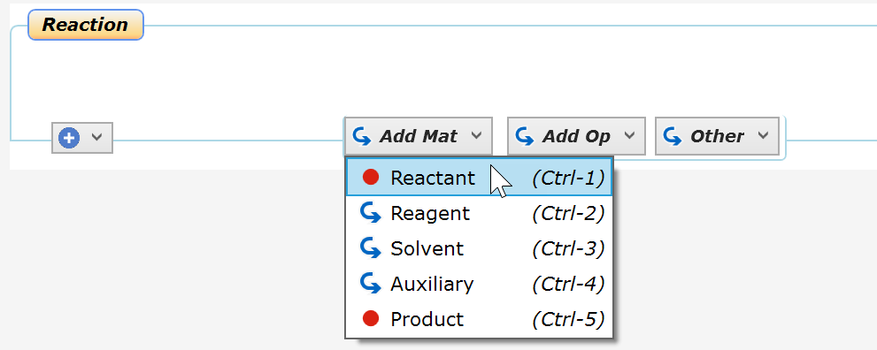
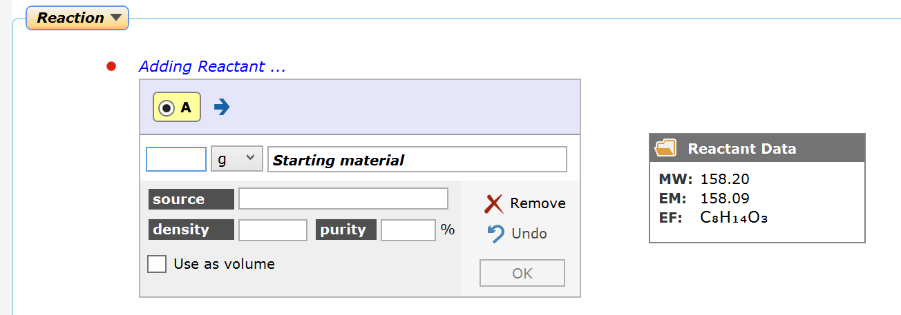
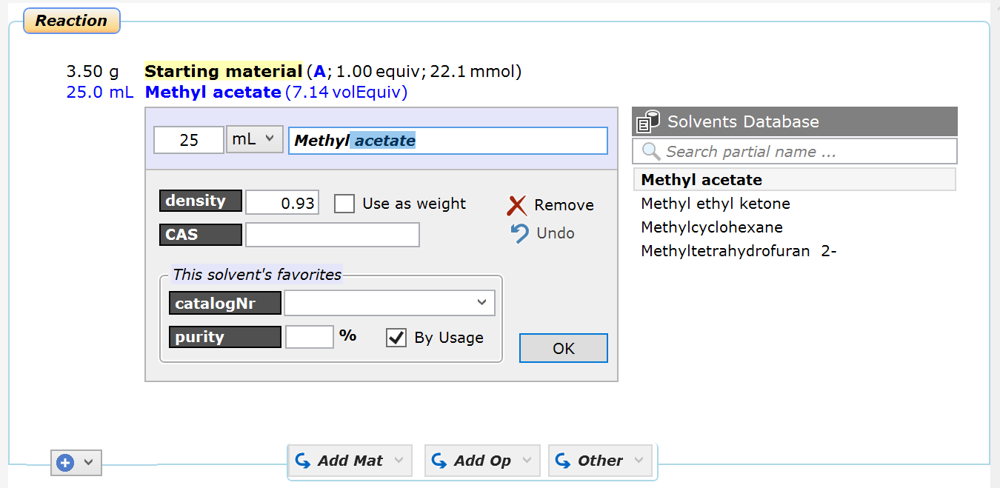
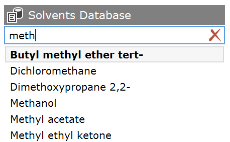
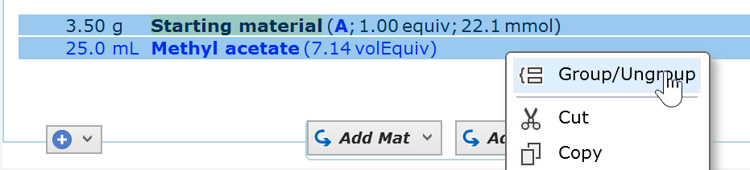
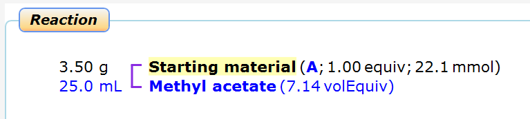

3) Add Materials
After the addition of the reaction sketch, a box with the default title "Reaction" appears below it. This is an experiment section, which allows the separation of common workflow parts such as reaction, workup, purification, etc. (later discussed in detail in this topic).

Now move the cursor over the "Add Mat" button and click the "Starting Mat" menu item of the appearing drop-down list, as shown above. Note that any material, i.e. a reagent, a solvent or an auxiliary can be added, even before the reference reactant is present. Btw, an auxiliary is a material without distinct molecular weight, e.g. charcoal, silica gel or molecular sieves.
Now a material panel expands within in the protocol area. Fill in the desired amount of the starting material, let's assume it's 3.50 g. You may also change the default name to a more meaningful one, and specify a supplier catalogNr or other any other specification of your material along with the material purity, if known (if no purity is specified, 100% is assumed for stoichiometric calculations). An info box to the right of the properties panel displays the starting material key data as obtained from the reaction sketch.

When done, click OK - the panel now collapses and a blinking cursor appears, providing the option to type free text below the collapsed entry; however, let's proceed here without using this option.
|
Efficiency Tip: Using the keyboard shortcuts shown in the material addition dropdown list (Ctrl-1, Ctrl-2, ...) can considerably speed up material entry. In the material detail panel, you can use the TAB key to navigate forward to the next data entry box, and ENTER to finalize the entry. This way, you never need to leave the keyboard for entering a material |
Now let's add a solvent next: Click the "Solvent" item of the Add Mat drop down menu: The solvents panel expands below the starting material summary. Type in the desired solvent volume, then start typing the first few characters of the desired solvent name into the name text box. A selection of database solvents matching the so far typed text appears to the right. Whenever a new material is entered, it is remembered in the materials database.

This database selection can be moved up and down using the arrow keys, or directly selected by the mouse. Selecting a database material populates the panel with its stored properties, e.g. its density. Pressing ENTER enters the selected solvent and collapses the detail panel.
In addition to the type-ahead functionality of the material name text box, which selects material names starting with a the typed characters, the Search partial name text box on top of the database area on the right provides database matches containing the specified text fragment anywhere in their name:

When done click OK, which collapses the solvent panel:

Reagents and Auxiliaries (charcoal, silica gel, etc.) are added to the experiment section in an analogous manner.
Optional: Material Grouping
Any number of materials can be grouped to visually indicate that they are being used as a solution or mixture. To do this, drag the mouse vertically over the desired materials to select them, then release the mouse button:

Click Group/Ungroup Materials in the appearing context menu: The selected materials now are connected by a grouping marker. Any number of adjacent materials can be grouped.

This not only saves typing, but also allows quick visual identification of solutions and mixtures, e.g. when browsing through protocols - a clear benefit as compared to free text.
Next step: How to add conditions ...